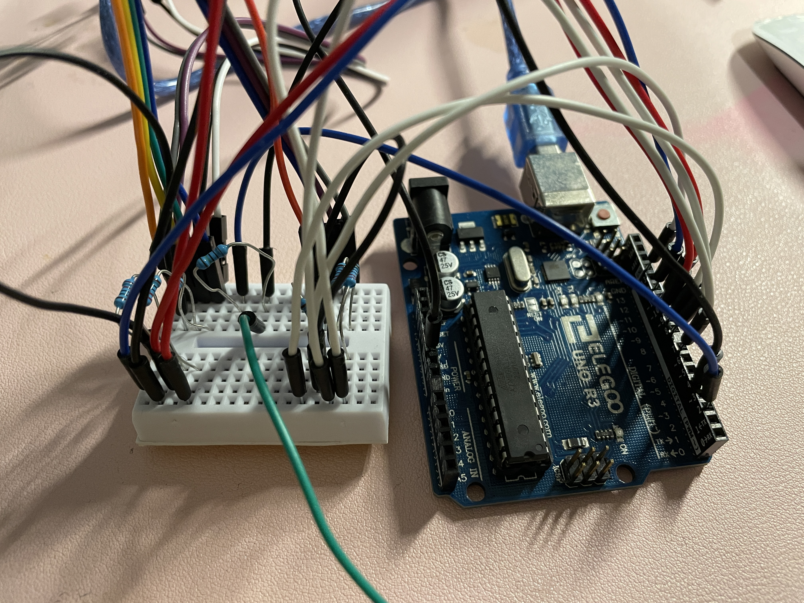

<!DOCTYPE html> 
<html> 
    <head> 
        <meta charset="utf-8"> 
        <meta name="viewport" content="width=device-width, maximum-scale=1.0" />

        <title>Final Project: LED Orchid</title> 

        <link href="style.css" media="screen" rel="stylesheet" type="text/css" />

    </head> 
    <body>
        <div class="header">
            <h1>Final Project</h1>
            <h2>Final Project Demo Video</h2>   
<iframe width="560" height="315" src="https://www.youtube.com/embed/JbXYUnn1HsE" title="YouTube video player" frameborder="0" allow="accelerometer; autoplay; clipboard-write; encrypted-media; gyroscope; picture-in-picture; web-share" allowfullscreen></iframe>
      
            <h2>Project Concept/Motivation</h2>
            <p>
            </a>
            </p>
              <p>
I created a decorative LED Orchid to brighten up my desk space and serve as a distraction when bored. Since I already owned the LED Orchid Lego set, 
I was able to create the rest of this project with just materials from the HCDE 439 starter kit. When the capacitive sensor aka the spoon is tapped,
the RGB LEDs change color. When the spoon is held, the RGB LEDs cycle through the possible colors every second. The colors are: red, green, blue, 
purple, and white, although other colors can be added by including their RGB values in the code. <br>
            <h3>Bill of Materials:</h3>
                <ul>
                <li>RGB LEDs</li>
                    <li>mini breadboard</li>
<li>Lego Orchid Set</li>
                  <li>Resistors</li>
                  <li>Wires</li>
                  <li>Spoon</li>
                  <li>Arduino</li>
            </ul>
            <br>
              </p>
<h2>Technical Implementation</h2>
        <h3>Circuit</h3>
        <p>
            Since I used the mini breadboard, all the parts are packed close together, making it a little confusing upon first glance. I included
            multiple shots of the circuit in order to help make it more clear. 
        <p>
            </a>
            </a>
            </a>
            </p>
<h3>Schematic</h3>
<p> 
    The circuit is made of three parts: RGB LED set one, RGB LED set two, and the capacitive sensor (I used a spoon). 
</p>
        <p>
            </a>
            </a>
            </a>
            </p>
<p>
This project uses 3 RGB LEDs, which need resistors in order to not burn out. The Arduino provides 5V of power and LEDs typically want to run at 20mA.
RGB LEDs are made up of red, green, and blue LEDs packed together. Red and green LEDs have a 1.8 V drop, while blue LEDs have a 3.3 V drop. Using Ohm's Law (V=I*R) 
we can calculate the resistance necessary for the LEDs to not get burnt out by the circuit. 

Blue:
V = I*R
5 V - 3.3 V = 20 mA * R
R = 1.7 V / 20 mA = 85 ohms

Red/ Green:
V = I*R
5 V - 1.8 V = 20 mA * R
R = 3.2 V / 20 mA = 160 ohms

These values are the minimum resistor values, but I used 220 ohm resistors to minimize the brightness of the LEDs. <br>
          </p>
<h3>Firmware</h3>
<pre>
// include the capacitive sensor library
#include \*<CapacitiveSensor.h\*>

// record the pins connected to the capacitive sensor
CapacitiveSensor   cs_2_4 = CapacitiveSensor(2,4); 

// record the pins connected to the RGB LEDs
int redPin= 12;
int greenPin = 11;
int bluePin = 10;
int redPin2 = 9;
int greenPin2 = 8;
int bluePin2 = 7;

// create variables recording the current sensor value
int SensorValue = 0;
// last sensorvalue,
int lastSensorValue = 0;
// and difference between the sensor values
int difference = 0;
// create a variable counting which case the LEDs are on
int var = 1;


void setup() {
  // put your setup code here, to run once:
  cs_2_4.set_CS_AutocaL_Millis(0xFFFFFFFF);  // turn off autocalibrate on channel 1
  // initialize the LED pins
  pinMode(redPin, OUTPUT); 
  pinMode(greenPin, OUTPUT);
  pinMode(bluePin, OUTPUT);
  pinMode(redPin2, OUTPUT);
  pinMode(greenPin2, OUTPUT);
  pinMode(bluePin2, OUTPUT);
  // begin the serial monitor
  Serial.begin(9600);
}

void loop() {
  // sense the current capacitive sensor values
  long sensorValue =  cs_2_4.capacitiveSensor(30);
  // if the current sensor value doesn't equal the last sensor value
  if (sensorValue != lastSensorValue) {
    // find the difference between the sensor values
    difference = sensorValue - lastSensorValue;
    // if this difference is not arbitrary (calibrate based on sensor values
    // printed to the serial monitor)
    if (difference > 50) {
      // check if the case counter variable is on the last case
      if (var == 5) {
        // if it is, switch the case back to 1
        var = 1;
      } else {
        // otherwise, move on to the next case
        var++;
      }
      // switch which case the LEDs are on based on the case counter
      switch (var) {
        case 1:
          setColor(255, 0, 0); // Red Color
          delay(1000);
          break;
        case 2:
          setColor(0, 255, 0); // Green Color
          delay(1000);
          break;
        case 3:
          setColor(0, 0, 255); // Blue Color
          delay(1000);
          break;
       case 4:
          setColor(255, 255, 255); // White Color
          delay(1000);
          break;
       case 5:
          setColor(170, 0, 255); // Purple Color
          delay(1000);
          break;
       }
    }
    // set the last sensor value equal to the current sensor value
    lastSensorValue = sensorValue;
    // to help debug:
    // print the current sensor value to the serial monitor
    Serial.print(sensorValue);
    Serial.print("\t");
    // print the difference in sensor values to the serial monitor
    Serial.print(difference);
    Serial.print("\t");
    // print which LED color case we are on
    Serial.println(var);
    // arbitrary delay to limit data to serial port
    delay(10);                          
  }
}

// create a function which sets the color of the RGB LEDs
void setColor(int redValue, int greenValue, int blueValue) {
  // set the pin connected to the red segment of the LEDs
  analogWrite(redPin, redValue);
  analogWrite(redPin2, redValue);
  // set the pin connected to the green segment of the LEDs
  analogWrite(greenPin, greenValue);
  analogWrite(greenPin2, greenValue);
  // set the pin connected to the blue segment of the LEDs
  analogWrite(bluePin, blueValue);
  analogWrite(bluePin2, blueValue);
}
</pre>

        </div>
        
    </body>
</html>
